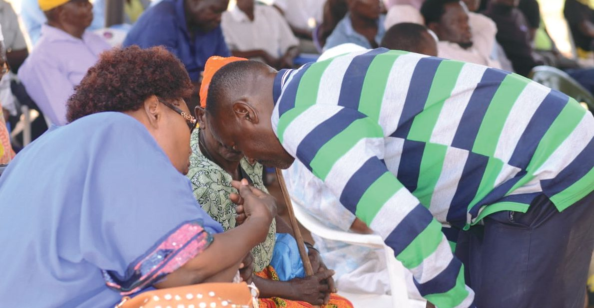

Project Title
- Proponent:
- Type:
- Funding:
- Phase:
- Description:
- Deadline:

The
TafSIRI makes civic engagement fun!
The easy platform lets you explore, ask questions and join community conversations on the latests developments
TafSIRI encourages curiosity and welcomes all questions and ideas!
Sign up to make informed decisions with TafSIRI!
About
The TafSIRI Initiative is an innovative platform designed to enhance and streamline Public Participation in infrastructure projects at the County level.
The term "TafSIRI" originates from the Swahili word 'Tafsiri,' meaning 'to decode/interpret/translate.'